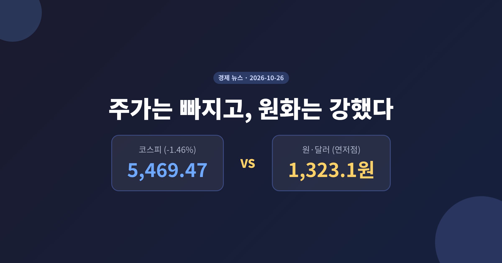
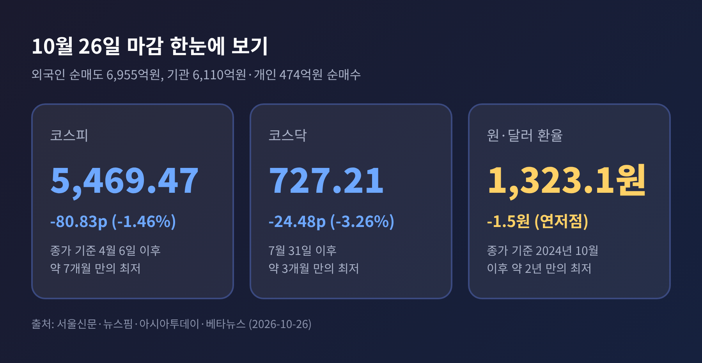
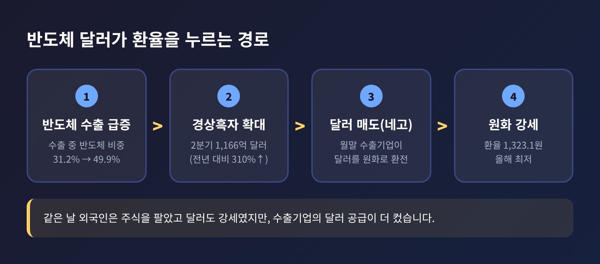
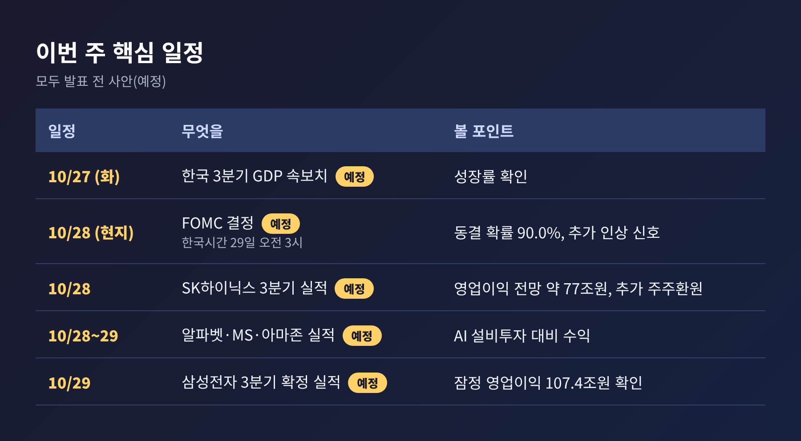
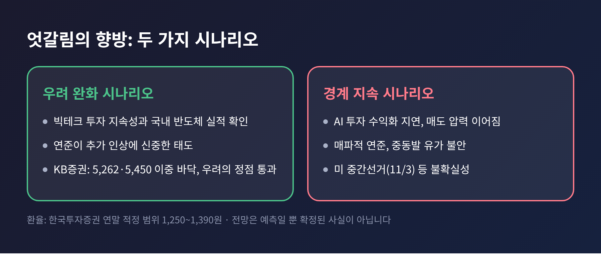

3줄 요약
오늘은 코스피 하락과 원화 강세가 동시에 나타난 이유를 정리해 보려 합니다. 무슨 일이 있었는지, 왜 중요한지, 배경과 앞으로의 변수를 차례로 짚겠습니다.
26일 코스피는 전 거래일보다 80.83포인트(1.46%) 내린 5,469.47에 마감했습니다. 종가 기준으로 4월 6일(5,450.33) 이후 약 7개월 만의 최저 수준입니다. 코스닥은 3.26% 급락한 727.21로, 7월 31일 이후 가장 낮았습니다.
장중 흐름도 좋지 않았습니다. 5,499.05로 출발해 5,565.67까지 올랐다가 오후에 5,455.11까지 밀렸습니다. 상승 종목은 101개, 하락 종목은 792개로 집계됐습니다(서울신문).
주체별로는 외국인이 6,955억원을 순매도했습니다. 기관이 6,110억원, 개인이 474억원 순매수에 나섰지만 매물을 다 받아내지 못했습니다. 외국인 순매도액은 매체마다 조금씩 다릅니다. 넥스트레이드 거래분을 포함한 집계에서는 7,531억원으로 나왔습니다(뉴스핌).
환율은 정반대로 움직였습니다. 원·달러 환율은 주간거래 종가 1,323.1원으로, 전일보다 1.5원 내렸습니다. 장중 저점은 1,320.6원이었고, 종가 기준으로는 2024년 10월 2일(1,319.3원) 이후 약 2년 만의 최저입니다.

보통 외국인이 주식을 대거 팔면 원화도 약해지기 쉽습니다. 팔아서 받은 원화를 달러로 바꿔 나가기 때문입니다. 그런데 이날은 원화가 오히려 강했습니다.
게다가 대외 여건도 원화에 불리했습니다. 중동 긴장으로 브렌트유는 23일 3.1% 오른 배럴당 116.72달러를 기록했고, 미국 10년물 국채금리는 약 4.99%까지 올랐습니다. 달러인덱스도 101.7 안팎의 강세였습니다(베타뉴스, 머니투데이).
두 시장의 신호가 다르다는 것은 돈을 움직이는 주체가 다르다는 뜻입니다. 주식시장은 외국인 투자자의 포트폴리오 조정이 이끌고, 외환시장은 수출기업이 번 달러의 공급이 이끌고 있습니다. 어느 쪽이 더 강한지에 따라 수입물가, 해외 투자, 수출 채산성이 모두 달라집니다.
환율이 내리면 수입 물가에는 도움이 되지만, 수출기업의 원화 환산 수익은 줄어듭니다. 이 점에서 단순히 반가운 소식만은 아닙니다.
환율을 끌어내린 직접 요인은 월말에 겹친 반도체 수출기업의 달러 매도(네고) 물량입니다. 민경원 우리은행 이코노미스트는 반도체 네고 물량이 정규장에서 환율 상단을 무겁게 누른다고 분석했습니다(머니투데이).
구조적인 배경도 있습니다. 2분기 경상수지 흑자는 1,166억 달러로 1년 전보다 310% 늘었고, 2분기 수출은 57% 증가했습니다. 반도체가 전체 수출에서 차지하는 비중은 올해 초 31.2%에서 지난달 49.9%까지 올랐습니다(데일리안).
월평균 환율은 6월 1,527.3원에서 9월 1,359.0원으로 11.0% 내렸습니다. 원화의 명목실효환율은 2024년 10월 이후 약 2년 만에 가장 높습니다. 한편 신현송 한국은행 총재는 22일 기자간담회에서 실효환율로 보면 환율이 아직 내려갈 여지가 있다는 취지로 평가했습니다.

주가 쪽의 사정은 다릅니다. 코스피는 최근 한 달(23일 기준) 21.6% 하락해 같은 기간 나스닥(-4.1%), S&P500(-1.5%), 닛케이225(-5.5%)보다 낙폭이 컸습니다(서울신문). 외국인은 이달 23일까지 코스피에서 21조 4,000억원을 순매도했습니다(데일리안).
첫째는 AI 투자 수익성에 대한 의문입니다. 메타는 3분기 매출이 26% 늘었지만 대규모 설비투자로 잉여현금흐름이 21억 2,000만 달러 적자로 돌아섰고, 22일 나스닥은 2.60% 내렸습니다(머니투데이). AI에 쓴 돈이 이익으로 돌아오는지를 따지는 국면으로 넘어온 셈입니다.
둘째는 이벤트를 앞둔 관망입니다. 이번 주에는 FOMC, 빅테크 실적, 삼성전자와 SK하이닉스 실적이 몰려 있습니다. 대신증권 이경민 연구원은 관망심리가 짙어 적극적인 저가매수와 반등 탄력은 제한적이라고 봤습니다.
셋째는 금리입니다. 연준은 지난달 기준금리를 3.50~3.75%에서 3.75~4.00%로 0.25%포인트 올렸습니다(뉴스웨이). 긴축이 이어질 수 있다는 부담이 위험자산 선호를 누르고 있습니다.
종목별로는 KB금융 -3.79%, 현대차 -2.54%, LG에너지솔루션 -2.09%가 크게 내렸습니다. 삼성전자는 1.16% 내린 21만 3,000원, SK하이닉스는 0.16% 내린 127만 5,000원에 마감했습니다. SK하이닉스는 키옥시아 투자 차익을 활용한 특별배당 기대로 장중 올랐다가 하락 전환했습니다.
아래 일정은 모두 발표 전이며 '예정' 사안입니다.
빅테크는 알파벳과 마이크로소프트가 28일(현지), 아마존이 29일(현지) 실적을 내놓을 예정입니다. 삼성전자는 올해 90조~110조원의 주주환원 계획을 밝혔고, SK하이닉스는 약 40조원 자사주 매입 이후의 추가 환원 방안을 구체화할 것으로 전망됩니다.

환율부터 보겠습니다. 한국투자증권 문다운 이코노미스트는 4분기 평균 환율 전망을 1,350원에서 1,320원으로 낮췄고, 연말 적정 범위를 1,250~1,390원으로 제시했습니다. 다만 1,270~1,280원 부근에서는 하락세가 제한될 것으로 봤습니다(머니투데이, 뉴스1). 일부 시장 참가자는 연말 1,200원대 진입 가능성도 거론합니다. 반대로 미국 중간선거(11월 3일), 중동 정세, 연준 정책 불확실성은 환율을 다시 끌어올릴 수 있는 요인입니다.
주가는 실적이 열쇠입니다. 하나증권 황승택 센터장은 빅테크의 투자 지속성과 국내 반도체 실적이 확인되면 AI 투자 우려가 잦아들 수 있다고 봤습니다. KB증권 김동원 연구원은 7월 29일(5,262)과 10월 15일(5,450)의 이중 바닥을 근거로 "우려의 정점을 통과한 것으로 보인다"고 진단했습니다. 반면 키움증권 한지영 연구원은 수익화가 더디면 매도 압력이 이어질 수 있다고 경고했습니다.
흥미로운 지점은 두 시장이 한 방향으로 모일 수 있다는 것입니다. 연준이 추가 인상에 신중한 태도를 보이면 원화와 외국인 수급에 우호적일 수 있다는 분석이 있습니다(뉴스웨이). 반대로 매파적 신호가 나오면 주가와 원화가 함께 흔들릴 수도 있습니다.

정리하면 이렇습니다. 오늘의 엇갈림은 외국인의 자금과 수출기업의 달러가 서로 다른 방향으로 움직인 결과입니다. 둘 중 어느 쪽도 일시적이라고 단정할 수 없습니다.
"주가는 기대를, 환율은 현금을 먼저 반영한다."
이번 주 발표들이 끝난 뒤에야 어느 쪽이 더 오래갈지 가늠할 수 있을 것입니다. 그때까지는 숫자 하나에 일희일비하기보다 일정표를 곁에 두고 지켜보시길 권합니다.
본 글은 공개된 언론 보도를 정리한 정보 제공용 해설이며, 투자 권유가 아닙니다. 투자 판단과 그 결과의 책임은 투자자 본인에게 있습니다. 수치는 매체별 집계 기준에 따라 차이가 있을 수 있습니다.
참고: 뉴스핌, 서울신문, 아시아투데이, 비즈니스코리아, 마켓잉크, 베타뉴스, 머니투데이, 뉴스1, 데일리안, 디지털타임스, 뉴스웨이, 토큰포스트, YTN (2026-10-26 전후 보도)